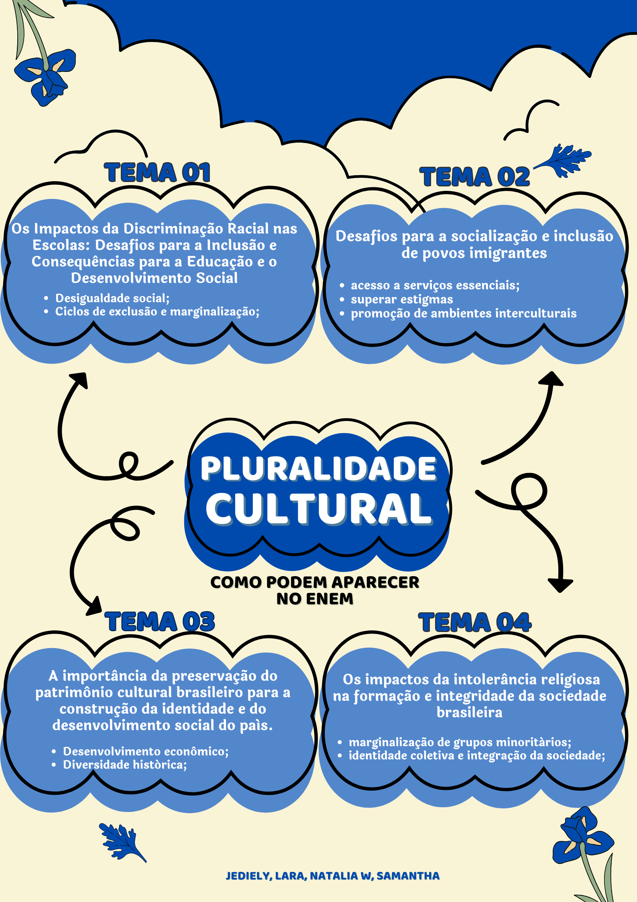

Pluralidade Cultural

1) Argumento de autoridade
A discriminação racial nas escolas tem sérios impactos na inclusão e no desenvolvimento dos estudantes, especialmente os negros. Segundo a socióloga Djamila Ribeiro, essa desigualdade reflete um sistema que historicamente marginalizou as populações negras, afetando seu desempenho acadêmico e autoestima. Em seu livro "O que é Lugar de Fala?", ela destaca que a discriminação nas escolas perpetua as desigualdades sociais, dificultando a construção de uma sociedade mais justa e igualitária. Superar essa exclusão é essencial para garantir uma educação inclusiva e promover a equidade social.
A discriminação racial nas escolas tem sérios impactos na inclusão e no desenvolvimento dos estudantes, especialmente os negros. Segundo a socióloga Djamila Ribeiro, essa desigualdade reflete um sistema que historicamente marginalizou as populações negras, afetando seu desempenho acadêmico e autoestima. Em seu livro "O que é Lugar de Fala?", ela destaca que a discriminação nas escolas perpetua as desigualdades sociais, dificultando a construção de uma sociedade mais justa e igualitária. Superar essa exclusão é essencial para garantir uma educação inclusiva e promover a equidade social.
2) Argumento histórico
A discriminação racial nas escolas tem raízes profundas na história do Brasil, marcada pela escravidão e pela exclusão sistemática de negros da educação. Mesmo após a abolição, as barreiras para o acesso de estudantes negros a uma educação de qualidade persistiram, refletindo uma desigualdade histórica. Esse contexto impacta diretamente o desempenho acadêmico e o desenvolvimento social dos estudantes, perpetuando ciclos de exclusão e marginalização. Portanto, a superação dessa discriminação é essencial para garantir uma educação inclusiva e igualitária para todos.
A discriminação racial nas escolas tem raízes profundas na história do Brasil, marcada pela escravidão e pela exclusão sistemática de negros da educação. Mesmo após a abolição, as barreiras para o acesso de estudantes negros a uma educação de qualidade persistiram, refletindo uma desigualdade histórica. Esse contexto impacta diretamente o desempenho acadêmico e o desenvolvimento social dos estudantes, perpetuando ciclos de exclusão e marginalização. Portanto, a superação dessa discriminação é essencial para garantir uma educação inclusiva e igualitária para todos.
3) Argumento de exemplificação
Um exemplo claro dos impactos da intolerância religiosa na sociedade brasileira pode ser visto nos ataques a terreiros de candomblé e outras religiões de matriz africana. Esses atos de violência e discriminação religiosa não só prejudicam as comunidades afetadas, mas também enfraquecem a coesão social ao fomentar o medo e a divisão. Além disso, a intolerância religiosa perpetua a marginalização de grupos minoritários, impedindo o pleno exercício da liberdade de crença e afetando a formação de uma sociedade plural e democrática. Esses episódios mostram como a intolerância religiosa não apenas prejudica indivíduos, mas também compromete a integridade e a convivência pacífica entre os diferentes grupos sociais do Brasil.
Um exemplo claro dos impactos da intolerância religiosa na sociedade brasileira pode ser visto nos ataques a terreiros de candomblé e outras religiões de matriz africana. Esses atos de violência e discriminação religiosa não só prejudicam as comunidades afetadas, mas também enfraquecem a coesão social ao fomentar o medo e a divisão. Além disso, a intolerância religiosa perpetua a marginalização de grupos minoritários, impedindo o pleno exercício da liberdade de crença e afetando a formação de uma sociedade plural e democrática. Esses episódios mostram como a intolerância religiosa não apenas prejudica indivíduos, mas também compromete a integridade e a convivência pacífica entre os diferentes grupos sociais do Brasil.
4) Argumento de comparação
A intolerância religiosa no Brasil pode ser comparada à discriminação racial, pois ambas as formas de preconceito resultam na marginalização e exclusão de grupos minoritários. Assim como o racismo historicamente tem enfraquecido a coesão social, a intolerância religiosa também divide a sociedade, impedindo a construção de um ambiente inclusivo e igualitário. Enquanto o racismo afeta negativamente as populações negras, a intolerância religiosa atinge particularmente religiões de matriz africana, como o candomblé e a umbanda. Ambas as formas de discriminação geram tensões sociais, prejudicam o desenvolvimento de uma identidade coletiva e comprometem a integridade da sociedade, tornando-a mais polarizada e menos capaz de respeitar as diferenças que a tornam plural.
A intolerância religiosa no Brasil pode ser comparada à discriminação racial, pois ambas as formas de preconceito resultam na marginalização e exclusão de grupos minoritários. Assim como o racismo historicamente tem enfraquecido a coesão social, a intolerância religiosa também divide a sociedade, impedindo a construção de um ambiente inclusivo e igualitário. Enquanto o racismo afeta negativamente as populações negras, a intolerância religiosa atinge particularmente religiões de matriz africana, como o candomblé e a umbanda. Ambas as formas de discriminação geram tensões sociais, prejudicam o desenvolvimento de uma identidade coletiva e comprometem a integridade da sociedade, tornando-a mais polarizada e menos capaz de respeitar as diferenças que a tornam plural.
5) Argumento de raciocínio lógico
A socialização e inclusão de imigrantes enfrentam desafios como barreiras linguísticas, preconceito e a falta de acesso a oportunidades no mercado de trabalho, o que contribui para a marginalização desses grupos. A resistência social, alimentada por estigmas e xenofobia, dificulta a convivência intercultural e impede uma integração plena. Para superar esses obstáculos, é essencial implementar políticas públicas que garantam acesso a serviços, como educação e saúde, e promover iniciativas que incentivem a aceitação das diferenças culturais. Além disso, a educação e a conscientização sobre diversidade são fundamentais para mudar atitudes sociais e criar um ambiente mais inclusivo e igualitário.
A socialização e inclusão de imigrantes enfrentam desafios como barreiras linguísticas, preconceito e a falta de acesso a oportunidades no mercado de trabalho, o que contribui para a marginalização desses grupos. A resistência social, alimentada por estigmas e xenofobia, dificulta a convivência intercultural e impede uma integração plena. Para superar esses obstáculos, é essencial implementar políticas públicas que garantam acesso a serviços, como educação e saúde, e promover iniciativas que incentivem a aceitação das diferenças culturais. Além disso, a educação e a conscientização sobre diversidade são fundamentais para mudar atitudes sociais e criar um ambiente mais inclusivo e igualitário.